Introduction
Contents
Introduction¶
The purpose of these course notes is to act as a resource for students to consult throughout the semester while undertaking one of the below subjects:
These subjects all involve either the development of requirements of a software system or the implementation of that system into code from requirements.
For many students, this is the first time you will be working in teams using agile methodologies, working with a client, and potentially even the first time you are developing software requirements (rather than the requirements being given to you from a university professor). As such, the learning curve for this subject can be steep for some.
This handbook should help you acclimate yourselves to content learned throughout the semester and can be used as a resource to reference when you have questions.
Attention
This handbook will act as a living guide, so please feel free to raise an issue in the top right-hand side of this website, if you want to raise suggestions or advice.

Contributors¶
A big thank you to the contributors who worked on these course notes. You can get in contact with them here.
This work was supported by the University of Melbourne Chancellery Academic – Dual Delivery Contributions grant.
Chapter 1: Agile Methodology¶
In this subject, you will form teams and operate according to the agile methodology. This chapter will help familiarise students with the agile framework for project management and software development.
Software Development Lifecycles (SDLCs)¶
Software development lifecycles (SDLCs) refer to a process for planning, developing, testing, and deploying a software system. There are two main types of SDLCs: formal and Agile.
SDLC |
Type |
|---|---|
Formal |
|
Formal |
|
Formal |
|
Agile |
|
Agile |
|
Agile |
Attention
You do not need to learn these SDLC methodologies - you will only make use of Scrum. Links have been provided to the others in case you want to learn more.
Agile was formed after teams were frustrated by the rigidity of formal methods, and their inability to adapt to change easily without exceeding cost and time constraints. For example, in Waterfall, teams complete all the requirements work before moving to design and subsequently development. If the requirements changed during the development phase, the team would need to start over, costing significant time and money, something that is not feasible in many situations.
Agile Manifesto¶
Agile, much like its name, focuses on being able to adapt to change rapidly through developing software incrementally. The agile manifesto explains the core values and principles that are the basis of Agile:
Individuals and interactions over processes and tools.
Working software over comprehensive documentation.
Customer collaboration over contract negotiation.
Responding to change over following a plan.
Scrum Framework¶
For this subject, you will work in agile teams following the Scrum framework.
What is Scrum?¶
Scrum is a framework used to implement an Agile mindset. It focuses on ensuring teams work together, embodying the values from the agile manifesto. Scrum is based on teams working iteratively, in time-boxed sprints (typically 2-4 weeks), with a predetermined set of tasks. During sprint planning, the team decides which tasks to work on during the upcoming sprint, to ensure they maximise value to their client. If requirements change, the teams can easily adapt as sprints are short, and the subsequent sprints planning can re-prioritise the changed requirements.
Sprints¶
Sprints are a short time-boxed period in which a scrum team endeavours to complete a set amount of work. The duration of sprints can be determined by teams, but typically duration is between 2-4 weeks. As sprints have several ceremonies that must be completed, teams should determine what works best for them.
Scrum Roles¶
Scrum teams have three key roles: product owner, scrum master, and development team members
Product Owner¶
The product owner ensures the team delivers the most value to the client. They have a strong understanding of the project, which is used to prioritise user stories in upcoming sprints.

Source: Atlassian
Product owners are required to maintain close ties with the client and seek their validation and input. They are also the conduit for communication with the client - all emails, meeting invites, etc. from the team should be guided through the product owners to reach the client.
Scrum Master¶
The scrum master is responsible for ensuring that the Scrum framework is followed. Unlike a manager, the scrum master coaches the team rather than leading them - scrum masters are servant leaders. They have no authority to act as a manager in the traditional sense of being able to allocate tasks. Instead, it is their responsibility to ensure that they oversee how the project is tracking, and work to unblock developers to continue meeting objectives.

Source: Atlassian
Development Team¶
The development team refers to the team members who are implementing the system. In your project, all team members must be a part of the development team (including the Scrum master and product owner).
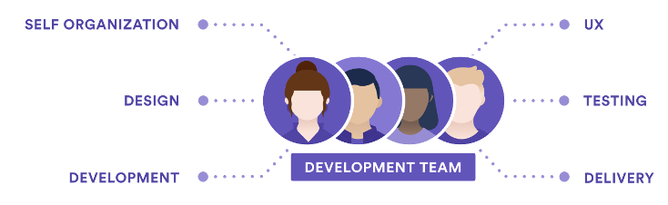
Source: Atlassian
There are several other roles that teams may benefit from using. Please note that these are not Scrum roles:
Quality Assurance/Testing lead: Monitors testing other initiatives to ensure the system is built to a high quality. Often, they are responsible for creating a testing plan and ensuring the testing objectives are met
Frontend lead: Oversees the frontend development of the project and is typically responsible for setting up and configuring the frontend codebase. Additionally, plays a key role in any decision-making about frontend architecture.
Backend lead: Oversees the backend development of the project and is typically responsible for setting up and configuring the backend codebase. Additionally, plays a key role in any decision-making about backend architecture.
Scrum Artefacts¶
Managing work in a scrum team involves the use of two artefacts:
Product backlog: Primary list of work that needs to be done which is maintained by the product owner.
Sprint backlog: The list of work that needs to be completed in the current sprint.
Scrum Ceremonies¶
Scrum ceremonies refer to a set of meetings that are used to manage the development of a project. These ceremonies are important in facilitating team communication and reducing the feedback loop. The table below shows the key details of the Scrum ceremonies.
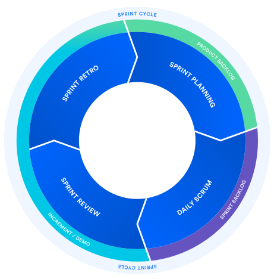
Source: Atlassian
Ceremony |
When |
Who |
Preparation |
Duration |
Process |
Outcome |
|---|---|---|---|---|---|---|
Sprint planning |
Start of each sprint |
Development team |
Product owner should have a prioritised product backlog |
1 hour per week of sprint. E.g., 2-week sprints have a 2-hour session |
1. Product owner presents product backlog |
Populated sprint backlog in the team’s task tracking tool. |
Stand-up |
Weekly |
Development team and supervisor |
None |
<15 minutes |
Each team member says what they have done, what they will be working on and any blockers. |
|
Sprint review |
End of each sprint |
Development team and client |
None |
1 hour |
Product owner presents the work completed in previous sprint and seeks feedback. |
Populated sprint review page in the team’s document repository. |
Sprint retrospective |
End of each sprint |
Development team |
None |
20 mins |
Scrum master facilitates session to establish what the team thought went well, what didn’t work and what actions the team could do to improve. |
Populated retrospective page in the team’s document repository. |
We have outlined how the scrum framework can assist teams in following the agile manifesto. Now we will discuss how development requirements can be represented.
Representing Requirements the Agile Way¶
Product requirements are a way of defining a product’s purpose, features, functionality, and behaviour. It serves as a common place to develop and guide understanding for the technical team (the developers) and the client to help build the product.
These requirements are then represented as initiatives, epics, tasks, and subtasks.
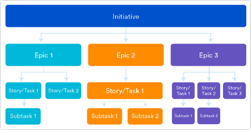
Source: Atlassian
Initiatives¶
In this subject you will only have one concurrent project, so the project will count as the initiative. In a larger business where there might be 2 or more applications under development simultaneously, there would be 2 or more initiatives to cover each development.
Epics¶
An epic refers to a large body of work that can be broken down into user stories. Epics cluster user stories that have a similar higher-level objective.
Epics are a useful way to organise and create a hierarchy out of the work. The goal of breaking down epics into user stories is to reduce the amount of work required for the project into small, incremental tasks so that value is delivered throughout the life of the project through the completion of these smaller tasks. For client-based projects, this means that you can deliver incremental progress and demonstrate value much easier than if the tasks remained large pieces of work.
Epics generally have a duration greater than one sprint. As the team progresses through the project and develops a better understanding of the project and its requirements, user stories will naturally be added and removed from an epic. This is exactly what we want in an epic following agile methodology: a flexible scope that changes based on client feedback and team progress.
User Stories¶
A user story is the smallest unit of work in the agile framework. A user story may have one or many subtasks, but user stories are considered the smallest piece of work that constitutes an end goal from a user’s perspective. A user story is an end goal, not a feature, expressed from the perspective of the software user.
As discussed, user stories refer to a way of writing requirements from the perspective of the end-user. By doing this, requirements follow the agile methodology and are focused on the value delivered to the end-user.
A key component of agile software development is putting people first, and a user story puts end-users at the centre of the conversation. User stories use non-technical language to provide context for the development team. From reading a user story, the developer doing the work required for that user story knows what they are building, why they are building, for whom they are building it, and what value it creates.
How to Write a User Story¶
When first created, user stories consist of only one sentence in simple language meant to outline the desired outcome - they don’t go into detail. User stories are expanded upon later and more details are added to the user story, as agreed by the team, as work begins on the issue.
User stories are written to be non-technical following the format:
As a [role], I want to [goal], so that I can [benefit].
As an example, a company like Facebook might create a user story for new
functionality for their website with the following format:
As an individual user, I want to upload a photo to my profile picture,
so that people who search for my name can see a photo of me.
Story Points: User Story Estimation Metric¶
As user stories reflect requirements that a developer must implement, they should have a corresponding estimate for the effort required to develop the functionality. This is necessary for time-boxed projects to estimate the time to delivery for new functionality. However, estimations in the Agile world are not based on time, but instead use story points.
Story points estimate a task by considering the amount of work that needs to be done, the difficulty of the task and any potential risk or uncertainty involved. This is a better estimate as using the time taken to complete a task can vary from developer to developer depending on their level of experience.
Various scales can be used for story points. Two common methods used are:
Fibonacci sequence (1, 2, 3, 5, 8…)
T-shirt sizing (XS, S, M, L, XL)
Regardless of which estimation technique your team chooses to use, you should have the estimation technique documented in your team’s document repository.
Estimation Process¶
The estimation process occurs during sprint planning. There are several ways to estimate the story points of a user story - we will look at planning poker today:
All members are given cards that have a story point value. If using Fibonacci sequence, would have cards for 0, 1, 2, 3, 5, 8, 13…
Product owner reads out a user story and clarifies details if anyone has any questions.
Team discusses how they will handle the task and what skills are required to understand the approach.
Each member picks a card with a story point value they feel matches the user story just discussed, and places it face-down.
Once all team members have chosen a card, the team turns over all the cards and discusses.
Once the team reaches a consensus on the user story’s estimate, the product owner notes down the value.
Repeat until all user stories product owner has prepared are complete.
The estimates should be added to your chosen task tracking tool.
Extra Resources
Link |
Description |
|---|---|
A free tool that gamifies the process. |
User Story Prioritisation¶
To deliver greater value to your client, you will want to invest your efforts in tasks that are of importance first. The importance of tasks is decided in discussions with the client (it is not up to the development team to decide priority). One method of displaying the priority of a task is the MoSCoW task prioritisation method. Priorities are broken down into different levels of priority:
Must have: features that must be delivered or the software will not create the expected value for the client;
Should have: features that have significant value to the client and should be delivered, but not considered crucial;
Could have: features that the client considers nice to have but will not have a material impact to value, if not delivered; and
Won’t have: out-of-scope features; useful as next steps for your project as potential improvements for future releases.
Extra Resources
Link |
Description |
|---|---|
Further discussion of the MoSCoW method. |
|
Comprehensive Scrum guide. |
|
Details on running your sprint planning meeting. |
Once written, these stories should be documented centrally in the team’s document repository:

User Story Mapping¶
User story maps are intended to spark collaboration across agile team members, while providing them with the bigger picture of how the backlog stories fit together into a larger vision of the product your team is building. In agile team, product work exists as discrete backlog tasks and so visual tools are extremely helpful in communicating deadlines, goals, and the final product to developers in the team, as well as the client. This guarantees everyone is working towards the same ultimate goal.
Once created, the Product Owner is responsible for driving the creationg of the user story map. However, it is a group exercise and should be done by the entire team. Once created, it should then be communicated to the client.
When to Create User Story Maps¶
The user story map can be created before or after user story prioritisation. Sometimes it can help to visualise user stories when prioritising them.
Extra Resources
To aid you in creating a user story map, you can make use of templates.
Link |
|---|
This is an example of a user story map:
Chapter 2: Client Communications¶
In this subject, your team will be delivering a project to a client. Most students are likely to only have had experience mostly with university assignments and will be unfamiliar with how to interaction with a client.
Your client will be assigned by the Subject Coordinator, and once your client is assigned, you should contact them and work closely with them throughout the semester.
You will need them to:
Aid your team in developing requirements for your system.
Review progress after each sprint.
Provide feedback for prototypes.
It is imperative that you communicate all important product decisions with your client and involve them by seeking their feedback.
Communication with the client takes place through the Product Owner - they are the conduit of information between the team and the client, and as such, will be responsible for emailing the client with updates, invitations for meetings, etc.
Making Initial Contact with Your Client¶
You should contact your client via their provided email address. Your initial contact should introduce your team members and decide on a convenient time to conduct a first meeting.
To decide a common time to meet, you can use a scheduling tool, like When2Meet, to elicit their availability.
Creating Meeting Invites¶
Once an available time has been decided with your client, the Product Owner should send them a calendar invite for the meeting. This way, both your team and the client will not forget. Instructions on how to do this can be found here.
If the meeting will take place virtually, you can make use of the free Zoom account provided by the university to schedule Zoom meetings. Please follow the instructions to set up Zoom scheduling with your university Gmail account here.
During Client Meetings¶
Once a meeting is set with the client, the team should set up the Confluence page for the meeting - please see the chapter on document repositories for more information.
During the meeting, there are several roles that need to be filled by members of the development team:
Roles |
Responsibilities |
|---|---|
Meeting Coordinator |
It is generally a good idea to set one person as the meeting coordinator. This person is not responsible for speaking the entire time, but they are responsible for making sure the meeting has structure and direction, and that all questions in the agenda are asked and answered. All team members are encouraged to talk and ask questions during a meeting. |
Minute Taker |
This person is responsible for ensuring all discussions are well-documented (in Confluence). They are also responsible for emailing the minutes taken during a meeting to the client (within a day or two of the meeting). |
After Client Meetings¶
At the conclusion of a client meeting, the Minute Taker should email the client with the minutes they wrote. You don’t need to send the entire copy of notes (which can take a long time for your client to read). You could write down the main points in the meeting notes. Doing so will allow the client to correct and mistakes and makes sure the team does not waste time on work that is incorrect.
Sharing a Team Calendar¶
In large teams, it can be difficult to keep up with the number of meetings that take place. There are tools that take out the hassle of coordinating meeting invitations and reminders.
One that works well is Google Calendar for Slack. It can remind team members of meetings from directly in Slack if this is your chosen communications channel. If you have chosen a different application, you are welcome to search for plug-ins that work between it and Google Calendar (the default for university).
Logging Client Communications¶
All important decisions and milestones reached with the client via email should be logged in the team’s Confluence. This is to foster a shared understanding of agreements reached with the client. Your supervisor generally will not attend client meetings, so this also allows them to stay informed. You can do this by creating a client log in your document repository:

The communication itself should then be logged:
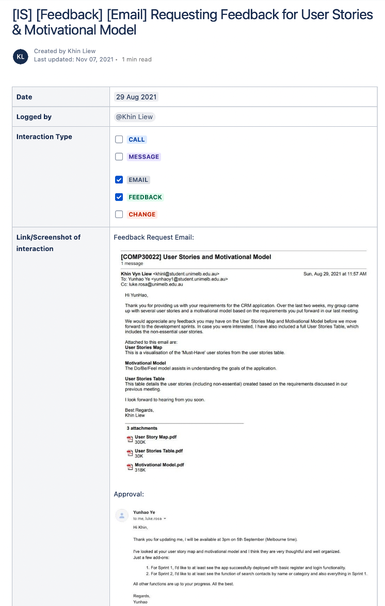
Extra Resources
One of our tutors made a helpful video to show how to organise meetings.
from IPython.display import YouTubeVideo
YouTubeVideo('VKmzozlgc7Y')
Chapter 3: Task Tracking¶
Task tracking, also known as task management, is far more than a simple to-do list. It means tracking tasks from beginning to end, delegating subtasks to teammates, and setting deadlines to make sure projects are done on time.
There are several benefits to using task tracking software:
Centralise tasks, increasing team visibility of task progress.
Prioritise tasks as a team.
Improve collaboration, allowing any team member to work across any task.
Track team progress.
As discussed in agile methodology, task tracking is an important part of representing requirements in an agile way.
In this subject, you are required to make use of a task tracking tool. As a team, you will need to agree on a tool to use. There are a several tools to choose from (this list is not exhaustive):
Name |
Description |
|---|---|
The industry-leading task tracking software. A good tool to learn if you want to enter the software industry. |
|
A very popular tool. Less feature-rich than Jira but quicker and easier to set up. |
|
New, compared to the other tools. Easy to set up as it comes with your repository but lacking many features. |
|
Like Trello, but a more mobile-friendly application. |
|
Much like asana. |
Setting Up Your Team’s Task Management¶
Once your team has decided on a tool to use, the next step is to populate it.
Regardless of your choice of task tracking tools, all require similar set-ups and the same level of detail.
Requirements¶
As discussed in agile methodology, all requirements of the system must be translated into epics, user stories, subtasks, etc. in your chosen task tracking tool.
Note
Please see the chapter on requirements elicitation to understand how to elicit requirements from a client.
Backlog¶
The backlog contains all pieces of work for the semester. Any work completed by the development team should have an associated task in the tracking tool. At the beginning of the semester, the Product Owner should populate the backlog with all requirements received from the initial client meeting.
The backlog will look like this once populated:

Once the backlog is populated, the Product Owner and client should jointly determine the priority of each task. The priorities of tasks help the development team determine what task to pick up next. It is expected the development team will work on high priority tasks first before moving on to lower priority tasks.
By default, all tasks are created with medium priority:

However, the priority can be changed to any of the below by editing the task:

The priority of all user stories in the backlog should reflect the prioritisation given by the client (please see the chapter on requirements elicitation).
Over the course of the year, the development team then uses the backlog as its single source of truth for work, and as the project progresses, work should be added and removed from the backlog.
Workflow¶
As a team, you should have a defined flow that all work must follow. A workflow covers all steps that must be done for work to be considered “ready for development” and then subsequently “ready for review” and then “complete”. Creating a workflow ensures that all team members understand and follow the same process, thus ensuring a high quality of work completed with far less oversight necessary. As workload increases, having a defined workflow ensures that the team’s processes are scalable.
Defining a Workflow¶
When defining a workflow, it can be tempting to make it complicated - avoid this temptation. Most important when creating a workflow is that it is understood by the team and highly repeatable.
All tasks that are created are first created in the backlog. Tasks that are selected for development are then moved into the upcoming sprint.
Once a developer commences work on an issue, the issue is moved to the next status.
Once development work has finished, the task should be moved to the next status for review by teammate(s). The task must be reviewed by another team member (not the one who completed the work).
If the review passes successfully (no bugs are found), the task should be moved to a completed status. If it fails review, it should be moved backwards to the prior status so the developer can address the bugs found.
An Example Workflow¶
The following is just one example of a workflow, and you are welcome to define your own that best suits your team - this is by no means the best workflow.

Source: Atlassian
Status: Open
This is the status that is assigned to all newly created tasks in the current sprint. For a task to be able to be moved from status open to in progress, it must have a definition of ready (DoR). A task with a definition of ready means it can be picked up by any developer and that developer can begin work immediately.
It is up to your team to decide on the definition of ready, however, a few examples of what might be required for a task to be considered ready for development can include (but is not limited to) the following:
The story should be written exactly in the ‘user story’ format and added to the User Stories page in the document repository. If it is not a user story, then it does not need to follow this format nor be added to the document repository.
The story should be created in the appropriate epic in the task tracking tool and added to the backlog.
It must have acceptance criteria written and added to the Acceptance Criteria page in the team’s document repository.
The acceptance criteria must be understood and agreed to by the team (we will discuss the acceptance criteria in status: in progress below).
The team must estimate the story during a sprint planning meeting.
The task must have an assignee.
The task must have a due date.
The following is an example of a well populated user story in Jira. It has a title in the form of a user story, acceptance criteria, priority, and, as it is still open, it is correctly still in the backlog.
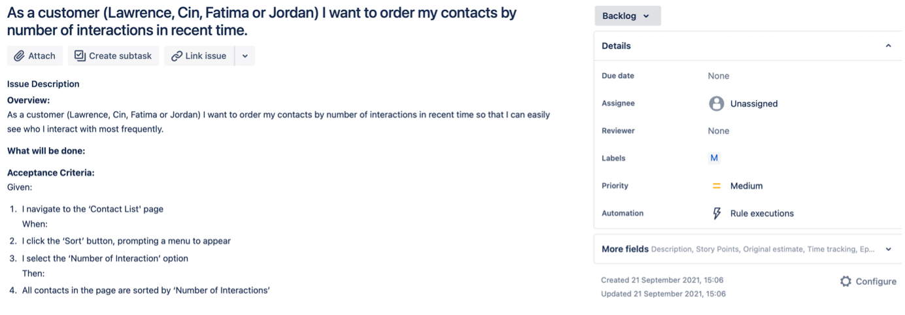
Status: In Progress
This status indicates that development work has commenced. For a task to be properly in progress, it must abide by the following:
It should have a single assignee. If more than one developer is completing the work, then the task is too big, and should be broken down into smaller, iterative tasks.
It should have an estimation of story points.
It should have a deadline when development is expected to be completed.
It should be contained in a sprint.
The following is an example of a well populated user story in Jira. It has a title in the form of a user story, acceptance criteria, priority, assignee, due date, and, as the story is in progress, it is assigned to the current sprint.
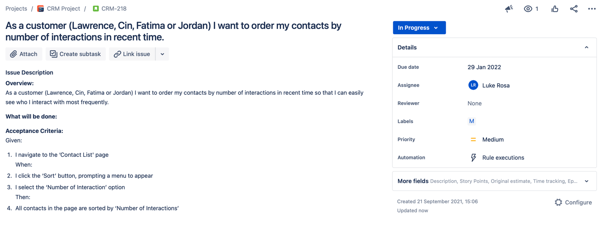
Status: In Review
There are several methods that can be used to review work done by team members.
Manual review: reviewers pick up tasks that have status: in review and review the code manually. This involves reading the code line-by-line, running tests, etc.
Peer programming: Two or more developers work together on a task, then one commits the code, and the other developers approve the code as reviewed. This is by far the fastest way to review work and recommended.
Walkthrough: As a substitute for the regular review process, a developer can walk through their task with other teammates as part of a collaborative process where teammates can ask questions. The whole team is not required to be present - your team should decide on a quorum required to receive approval.
The following is an example of a well populated user story in Jira. It has a title in the form of a user story, acceptance criteria, priority, assignee, reviewer, due date, and, as the story is in review, it is assigned to the current sprint.

Status: Done
As well as a definition of ready, the team should have a definition of done (DoD). The definition of done stipulates what is required before a task can be moved to status: done.
It is up to your team to decide on the definition of done, however, a few examples of what might be required for a task to be considered done can include (but is not limited to) the following:
Code is peer-reviewed.
Code is commented.
Code is checked in to trunk.
Code is deployed to test environment.
Code passes all testing listed in the team’s document repository.
End-user documentation is updated (for example, how-to guides).
Code is live on the production server.
The following is an example of a well populated user story in Jira. It has a title in the form of a user story, acceptance criteria, priority, assignee, reviewer, due date, and, as the story is complete, it is assigned to the current sprint. It also has comments from the reviewer showing the task was reviewed with no issues found.

Good Hygiene¶
Task tracking tools are common spaces shared by the entire team. They are where teammates go to understand the status of an issue or what to work on next, supervisors use it to monitor team progress, product owners use it to communicate progress to the client, etc. It is therefore imperative that they are kept in good shape:
Make sure that issues are updated frequently as coding continues.
Add comments to describe the status of an issue as you progress it.
Update the deadline if it is pushed back- or forward.
Move the issue between statuses as necessary.
Extra Resources
Link |
Description |
|---|---|
Best practices to follow throughout the semester. It covers creating issues, sprint, etc. |
|
A template that might inspire you. |
|
A template that might inspire you. |
Chapter 4: Document Repository¶
Throughout the semester, you and your team will generate a lot of knowledge - in the form of software requirements, architecture, and testing documents, etc. This knowledge will need to be centrally stored so it is accessible to the entire team and to the client at handover.
Document repositories solve this issue by acting as a central store of all project information and should be the first place your team references when searching for information.
There are many options for document repository software, but in this subject, we strongly encourage the use of Confluence.
Confluence is the industry leader and is a good tool to familiarise yourself with, if you wish to work as a software engineer as most companies use it.
Creating Your Team’s Space¶
The first step is to create your team’s Confluence space. Only one team member needs to do this and then grant every other team member access.
To set up the space, please follow these instructions: Creating a space in Confluence.
Set Up Your Space¶
Once created, it is very important to structure your space in a way that makes it easy to navigate.
You can begin by setting up your home page. The home page should contain:
Project summary.
Details of the client, supervisor, and development team.
Important links to other tools, for example, links to task tracking, code repository, etc.

Once the home page is set up, the next pages to create are meeting pages. Over the semester, you will be required to hold team, client, and supervisor meetings and you are expected to keep minutes for all meetings.
So, one logical way of structuring the Confluence space could be:
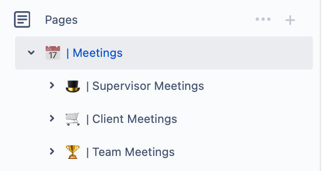
There should be a relative frequency of meetings. Supervisor meetings should occur weekly, team meetings should occur a few times each week, and client meetings should occur every few weeks. It is very important you create a log of each meeting:
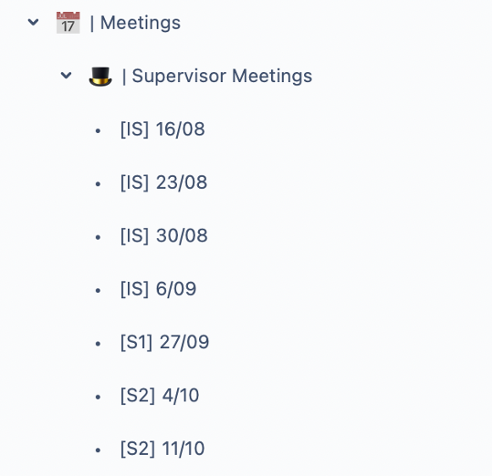
In the meeting page itself, your team should log:
Agenda, so teammates can create questions in advance of the meeting.
Participants present during the meeting.
A video and audio recording of the meetings.
All discussion items and decisions reached.
All action items with an assigned teammate who is responsible for the action.

Warning
Throughout the semester you will be developing a lot of resources that will need to be stored in Confluence. Please make sure you put thought into the structure of your space. If a teammate is unable to find work, it may result in duplication of tasks. If the client or marker is unable to find work, they may believe you have not done it.
Chapter 5: Version Control¶
Version control is essential when collaborating on a software project. Developers may be working on functionality within the same page or must make changes that affect each other. Version control systems, like Git, ensure projects can be run efficiently.
Version control is a way of tracking changes that are made to code. The most popular version control system is Git: more info on version control and Git.
Why Use Version Control?¶
Complete history of code so that any new breaking changes to codebase can be reverted.
Simplifies collaboration, everyone has access to the latest version of the codebase.
Improved transparency, code attributed to author.
Collaboration, branches can be created to work on a feature without holding up the team.
Introduction to Git¶
Git is a distributed version control system. This means that every developer has a full copy of the repository and its history. Many distributed version control tools use Git - amongst the most popular are GitHub and BitBucket. We recommend teams use GitHub for their source control.
Git Terms¶
To familiarise you with Git, below are some words you will hear repeated often:
Term |
Definition |
|---|---|
Repository |
Project folder which stores the project history. |
Remote repository |
Version of project hosted on internet (GitHub). |
Local repository |
Version of project on your machine. Changes made here are not visible by teammates unless pushed to the remote repository. |
Branch |
A separate branch from the repository that can be used to make changes independent of other branches (main). |
Main branch |
The default branch for your repository. |
Git Actions¶
These are the most common actions you are likely to perform using git:
Term |
Definition |
Command |
|---|---|---|
Clone |
Makes a local copy of a repository. |
git clone [repo] |
Add |
Marks file as staged, such that is added in the next commit. |
git add [filename] |
Commit |
Snapshot of repo, with several changes to the codebase. |
git commit -m “commit message” |
Push |
Pushes changes (commits) to the remote repository. |
git push |
Pull |
Pulls any changes from the latest version of the remote repository and integrates any file changes with your local branch. |
git pull [remote] [branch] |
Fetch |
Pulls changes from the latest version of the remote repository but does not change the files to match remote repository. Can be useful if you want to check whether a pull will override any of your local file changes. |
git fetch [remote] [branch] |
Local File Changes¶
Changes made to files that live inside a repository can be one of several statuses.
Status |
Description |
|---|---|
Untracked |
The file is not being monitored by the version control (does not exist). |
Unmodified |
The local file matches exactly the files in the remote repository. |
Modified |
The local file differs from the file in the remote repository. |
Staged |
Changes to the local file are ready to be pushed to the remote repository so the file in the remote repository matches exactly the file in the local repository. |

Branching¶
Git branches are effectively pointers to your self-contained changes. When you, as a developer, want to make changes to the code of a project in a remote repository (no matter how big or small the change is), you will create a branch to encapsulate all your changes. That branch is entirely self-contained and is not a part of the remote repository’s code. This stops potentially unstable code from being committed to the repository before it can be thoroughly tested and properly merged.
To learn more about branching, please refer here.
To learn the basics of branching in a fun way, check out this interactive tool to learn git branching. This tool is great for beginners or people who need a refresher.
Example Git Workflow¶
Bringing everything we have discussed together.
Once you have cloned (downloaded the most recent copy of the codebase) from GitHub. You have what is called a local copy of the repository.
Then, any changes you make within your working directory (copy of the repository on your machine) is said to be untracked. This means Git does not know about the file and its changes.
To ensure git tracks the file and its history, you need to add the file using the command git add [filename].
Once a file is tracked, its changes fall under two categories: staged or unstaged. For unstaged changes, Git has not marked the file to be a part of the subsequent commit. Staged changes refer to files with changes that are to be added to the next commit. When making a change that you want to be added to the remote copy of the repository, you need to make sure the changes are staged. This can be done by using the command git add [filename].
When all your changes are staged, then you want to commit those changes. A commit is a snapshot/milestone with a series of changes. Commits can be created with a message, using the following command: git commit -m “commit message”.
Once a commit is made, the file goes back to the unmodified state as the local repository updates the current branch’s history with the latest changes. To ensure the remote repository is also updated, such that everyone in the team can see the changes made, you need to push the changes to the remote repository. This can be done by running git push.
Another developer who may want to see your changes, can pull changes by running the command git pull [remote] [branch]. This will fetch the latest changes from the remote repository and integrate them with their local files.
Extra Resources
GitKraken: A great GUI that sits on top of Git’s command line integration to provide a more user-friendly way of interacting with version control systems.
What’s Next
This was a very general introduction to Git. Throughout this semester, you will be making use of GitHub - to learn more about GitHub, please see the next chapter focused primarily on GitHub.
Chapter 6: GitHub¶
Configuring Your Team’s Repository¶
Your first task once you decide to use GitHub is to set up a repository. You can learn how to do that here.
Once you have created a repository, there are several considerations when establishing how your team will work with the repository.
README¶
All teams should have a project level README file that explains your project, and what your system aims to do. It should also provide some detail as to how to use your code, along with any other useful information (the directory structure could be useful for complex file structures).
Teams can also add README files for separate components of the project, such as frontend and backend, which may detail specific commands/instructions.
Licenses¶
If you are creating a repository with the intention of making it publicly accessible eventually, you need to have a license to allow other developers to collaborate (and to protect you from misuse). GitHub provides a detailed guide on licenses along with a tool to determine which license is appropriate for your repository.
Branch Protection¶
When working on a software project, you want to ensure that critical branches (production branches) are not accidentally tampered with or deleted. Branch protection helps solve this by allowing developers to configure their repository such that key branches have certain protections that prevent deletions or require certain checks to pass before modifications. Such branches are called protected branches.
Find out how to protect your branches on GitHub here.
Integrations¶
Integrations can help manage your development workflow. - Rather than having to visit GitHub’s website each time you have a pull request, you can make use of the GitHub bot on Slack to automatically send you notifications of new PRs. Discord has a similar webhook that can be configured using this guide.
Code Reviews¶
Code reviews involve your teammates reviewing your work to ensure that code quality is maintained, and any errors are identified.
Code Review Activities¶
Pair programming: Having two developers working on a single unit of work; one person writes the code (driver) whilst the other reviews code real-time (navigator).
Pull requests: Having 1 or more developers review code changes before it is merged.
Pull Requests¶
Note
Commonly referred to as PRs.
Pull requests allow developers to review changes made on a certain branch before merging it into another. When team members complete some functionality and want it to be merged, they create a pull request, requesting for their changes to be pulled into the main branch. Developers can nominate reviewers to look at their pull request. Reviewers can inspect the code and either approve the changes, or request changes. Once approved, the developer can merge their code into the main branch.
Why Use Pull Requests?¶
Team members must review and check that the code changes are acceptable, thereby improving code quality.
Errors have a greater chance of being noticed early, as there is more than one team member reviewing/testing the changes.
They improve the team’s understanding of code as developers are forced to read other developers’ code; thereby dispersing knowledge of the code’s functionality more widely across the team.
Pull Request Templates¶
Ensuring your pull request has enough detail for a reviewer is crucial. If the reviewer does not understand what part of functionality has been added, they cannot provide a meaningful review. To avoid this, a pull request template can be useful. This provides a guideline on what information a developer should provide in the pull request, along with any mandatory checks that have already been completed.
You can view a sample template here.
To see an example of how to include PR templates in your repository, please see this Medium article.
Git Workflows (Branching Strategies)¶
A standard approach to organising Git actions within the project. Let us consider two common strategies…
Feature Branching¶
Feature branching entails creating a new branch for a new feature and using that same branch until the feature is completed. After completion, the feature branch is merged back into the main branch.

Source: Optimizely
There are several flavours of feature branching but we will examine Gitflow, by far one of the most popular branching strategies.
Gitflow¶
Gitflow relies on long-lived branches for development. There are two main branches, main and develop, with main being the production-ready codebase and develop reflecting changes to be made in the next release. Developers create feature branches off develop, and when complete, developers make a pull request to be merged into the develop branch. When the team is ready for a release, then a new branch is created and the code is tested before it is merged into the main branch.
Advantages |
Disadvantages |
|---|---|
Branches remain in a clean state. |
Long-lived branches can be hard to integrate with the main branch; have diverged too much. |
Ideal for when multiple versions of a product are required. |
Releases are delayed, and if there are many changes, could be highly problematic. |
Final merge from develop to the main branch can have many changes which may be overlooked by developers. |
Trunk Based Development¶
Trunk based development uses short-lived branches which are regularly merged into the trunk, reducing any delays associated with integrating code changes.
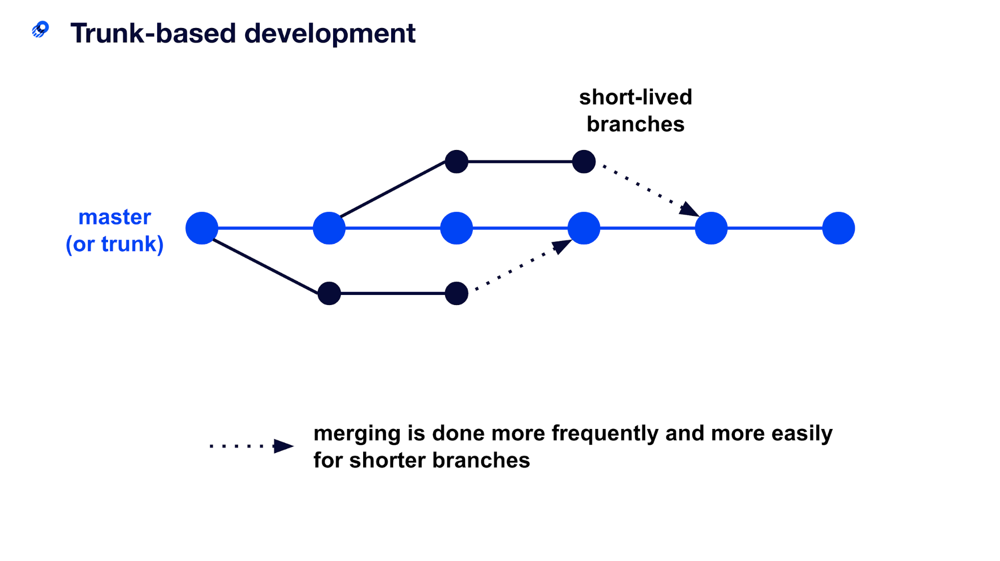
Source: Optimizely
Advantages |
Disadvantages |
|---|---|
Reduces likelihood of divergence from main. |
Frequent merging can lead to breaking updates. |
Minimise merge conflict. |
If slow build process, then there may be delays as people merge back into trunk. |
Software Releases¶
When your team has completed a sprint or wants to make a new release, there are several steps you should complete.
Releases are comprised of a tag and release notes.
Tags¶
GitHub allows developers to create tags. These provide teams to mark key milestones in a project by creating a tag off a certain commit. Tags are useful in releases, and you can name a tag by the associated version number, and that way developers can easily find all previous versions of the production-ready software by looking at the tags.
Tags are also necessary when creating software that is not yet production ready when working for a client. They need to be able to access the work completed in a sprint to see changes, but if the application is not yet live, then a tag is used to update the client on project status.
Release Notes¶
When you are creating multiple releases, it is important to explain what key changes have been made to the product. In a commercial project, release notes inform users of changes and clearly indicate the incentive to upgrade to the latest version (for example, patching authentication security bugs is a good incentive for users to migrate to the latest version of a product). In your project, the release notes provide an appropriate level of detail for your client to understand exactly what features and capabilities are available in each release.
Writing Good Release Notes¶
Keep it simple and avoid technical jargon.
Be specific about what has been implemented.
Group your notes logically. Creating headings for fixes, improvements and new features may be beneficial.
For an example, please refer to this open-source project’s release notes.
Chapter 7: A Simplified Workflow¶
For those unfamiliar with everything covered so far, it might not be clear how it all ties together. The use of a code repository, task tracker, and document repository all tie together to create a unified and organised workflow.
Taking an example, a team that uses:
Jira for task tracking.
GitHub for the code repository.
Confluence for the document repository.
Bringing all of this together, allows for a workflow that can be monitored and scaled as the team and work grows.

Chapter 8: Requirements Elicitation¶
Successful products are those that meet the needs of the client and can be easily adopted by the target user. Building a successful product can be difficult if teams do not understand the core business need of the product itself.
The purpose of this section is to understand more about requirements elicitation, the broad spectrum of tasks involved to help teams derive their requirements. By the end of this, you should understand what artefacts are used to represent the project specifications.
What Are Requirements?¶
Before we look at how requirements elicitation works, let us consider what requirements are. Broadly speaking, requirements define what teams need to implement. There are three key types of requirements that are used in software projects:
Functional requirements: These stipulate what the system should do. The Agile Scrum framework expresses functional requirements as user stories.
Non-functional requirements: These requirements detail any additional constraints that specify how a system should behave. Some examples include any safety, security, or performance requirements.
Emotional requirements: Requirements that detail how the target user should feel when interacting with the system.
Why Do We Need to Perform Requirements Elicitation?¶
Teams are provided with a high-level project brief and are tasked with extracting the project requirements. Requirements elicitation helps teams understand what these requirements are, whilst also building a strong understanding of the project and why it is needed.
Requirements are important as they provide teams with a clear set of features that the team will work to complete. It is also a clear way of demonstrating to the client, what capabilities will be delivered.
A strong understanding of the business need is equally important. As clients may often not know exactly what they want, a strong understanding of the project is important. When teams can understand what the key frustrations are, they are well positioned to come up with solutions that successfully solve the client’s pain points.
The process of requirements engineering, which is simply all the activities required to have your detailed specifications, are discussed below.
0. Background Research¶
Before you speak to your client, you should develop a general understanding of the project to aid your team in directing the meeting and forming helpful questions. For example, a previous year was tasked with building a personal CRM for clients. It was important for all students to have a good understanding of what a CRM was prior to the initial meeting.
Additionally, teams will benefit from finding competitors within the problem domain, to look for potential functionality that the client may want. Understanding the client’s competitors, peers, etc. will save the client work in having to explain all facets of their business and industry to your team.
1. Initial Client Meeting and Elicitation¶
Client Meeting¶
The first client meeting is your chance to understand more about your client, the project, and their expectations. During this meeting, teams should try to establish a basic understanding of the problem. Understanding what is wrong or missing with the current system (system as is) is critical in making sure that you build a product that can solve these frustrations/problems. If possible, teams should also clarify exactly what is expected from the product: who will use this, should the product be a mobile application or website, what other preferences should be considered.
Make sure to schedule the meeting in advance and prepare an agenda of questions you would like to ask ahead of time. Emailing your client with the agenda can be beneficial to ensure they are prepared. The meeting itself should have a facilitator and note taker assigned ahead of time, with team members jumping in as required.
Elicitation¶
Following your initial meeting, the team should work through the meeting minutes to extract the key requirements. Teams should work to extract the user goals - the objectives the target user of the system would want to achieve. These correlate to user stories, an agile way of representing requirements (see Agile methodology). Additionally, while you are in the process of reaching this shared understanding of what should be achieved, teams should also clearly look to define what the scope is. If there were any features or functionality mentioned earlier by the client, that cannot be feasibly achieved, then these should be clearly identified.
The process of writing your requirements can be done by different methods.
Motivational Modelling¶
One popular technique is to use motivational modelling. This technique allows the functional, non-functional, and emotional goals of the system to represented in a diagram. The benefit is that diagrams are often easier to read compared to written requirements, and emotional requirements are also considered.
Motivational modelling is done through brainstorming a list of the key requirements of the system and stakeholders involved. The list is called a DO/BE/FEEL/WHO list, and should detail:
DO: what your system can do? (Functional goals)
BE: how your system should behave? (Non-functional goals)
FEEL: how users should feel when using the system? (Emotional goals)
WHO: key stakeholders
This list is then converted into a hierarchical diagram, as shown below. This is a great starting point for teams to confirm the understanding of the project requirements, with the bottom leaves corresponding to user stories.

Note
For more information on how to create a motivational model, see the appendix.
2. Elaboration¶
Once the general user goals are understood, teams should work to expand and refine the information collected. This typically involves:
Verifying the motivational model is consistent with the clients understanding and expanding as required.
Developing personas to match your target users.
Developing prototypes.
Personas¶
Personas refer to fictional characters that represent the different types of users that may use your product. They play a key role in helping teams empathise and understand the users of the product, through using the persona to establish whether certain design decisions are correct.
To understand the power of a persona, consider buying a car. Different people buy cars for different reasons. Some people are looking for a large, reliable car for transporting their families whereas other people look for fast and luxurious cars to fit their lifestyles. If you had to design a car for a person, it is important to understand which category your client falls in, to make sure the car you design is suited to their purpose. This is how personas can be useful.

Source: 99Designs
It might seem weird to use fictional characters but using real people (like your client, a team member, etc.) could result in data privacy breaches, as well as unrealistic use cases, if they are not well aligned to actual user requirements.
Writing Personas¶
A persona should have the following elements:
Fictional name.
Job title/responsibilities.
Demographics (age, education).
Goals and tasks they are trying to achieve.
Any frustrations.
Below is a list of popular tools for making personas:
Personas should also be diverse in demographics and backgrounds (age, ethnicity, education, etc.) to capture real-life users.
Prototypes¶
Coding a system can be complex, and time-consuming. If your client realises they do not like the design of the system, or perhaps some interface needs to be reworked, doing this on the actual system can be incredibly time-consuming. Like many projects, one of the key constraints of your project is time. As a result, simply coding the system after deriving your requirements increases the risk of having to make major changes to the system midway.
Prototypes provide a solution to this problem. Teams can build a prototype, a hand drawn or digital mock system that resembles what the final product should look or behave like. These are much quicker to build and allow teams to get feedback from the client much earlier, reducing the likelihood of major changes to the system’s interface later.
Classes of Prototypes¶
Paper prototype/Low fidelity prototype: Hand drawing of user interface to allow it to be rapidly designed, simulated, and tested. These are typically black and white and don’t consider choices such as colour palette, font, and general styling.
High fidelity prototype: A digital prototype that looks very similar to what the final product should look like. These prototypes are made using no-code programs and should determine the final design of the system.
There are many tools that can be used for creating low fidelity prototypes:
Microsoft PowerPoint: While sometimes slow and cumbersome, PowerPoint comes complete with several good features for drawing and designing UI elements.
 This is an example of a watch UI
created through PowerPoint. User interaction elements can be
created, and a user scenario was created to take the client through
during a meeting.
This is an example of a watch UI
created through PowerPoint. User interaction elements can be
created, and a user scenario was created to take the client through
during a meeting.Miro can also be used to quickly create wireframes using their templates: Miro wireframe templates
The benefit of using a high-fidelity prototype vs. a low fidelity prototype is it allows development teams to be much more specific about how a product will look, feel, and act without having to code it (which can be very time-consuming). High fidelity prototypes also allow for greater interactivity - it can be demonstrated to the client and other users, and they can interact with the prototype to click buttons, menus, view page transitions, etc. to gain a much better idea of how the final product will behave. This is a great way of eliciting very specific feedback from the client on the placement of buttons, uses of colours, etc.
There are many tools that can be used for creating high-fidelity prototypes:
Figma: One of the most used tools professionally (and they offer a free student version)
Axure: Fully featured with a steep learning curve, but probably worth it if you wish to pursue UI design professionally (and they also offer a free student version).
Adobe XD: Far less fully featured but integrates well with other Adobe products. They also offer student discounts for their full suite of products.
3. Negotiation, Validation, and Specification¶
As the various requirements artefacts are developed, teams should be validating these with the client. If there is some disagreement between what the team believes is achievable and what the client wants, teams are required to negotiate and reconcile any differences. In extreme cases where a resolution cannot be reached, speak to your supervisor.
Running usability tests with your client is the easiest way to validate the requirements your team has created. First, a team should create tasks that can be completed using the prototypes - these tasks will represent the full set or a subset of the user stories. For example, if a user story is that a user logs in and views their purchase, the high-fidelity prototype should permit users to simulate this user story. It should have a success narrative and all other narratives should be failures.
If a user can successfully log in and view their purchase history, this is the success narrative. If they cannot, the task has been failed.
Once these tasks have been created, your team should contact the client to organise a meeting to conduct testing. Your team should assign a test facilitator whose job it is to ask the participant (your client) to perform the tasks your team has created. While the participant completes each task, the facilitator observes the participant’s behaviour and listens for feedback.
A minute taker should be assigned to note down feedback - all feedback should be welcomed from the client for things as small as the colour of a button. The more feedback you can elicit at this stage, the more time it will save you later when you have to make much more time-consuming changes to code.
One tool that can automate this process for you is Maze. These tools typically exist with all high-fidelity prototypes listed above.
Finally, once all your requirements have been finalised and the client is happy with them, you will have your set of specifications. This should include:
User stories.
Motivational model.
Personas.
Prototypes.
Extra Resources
What’s Next
Now that your team has elicited the requirements - it is time to start designing the application.
Chapter 9: Technology Stack¶
Unlike most of your other subjects, this subject does not have a pre-defined technology stack you must use.
There is no right or wrong answer as to your choice of technology stacks for your web application.
However, you should consider several factors:
The desires of your client.
The knowledge and experience of your teammates.
The desire to learn something new.
Time and budget limitations.
Like any other decision, the decision for a technology stack requires weighing the options and deciding as a team.
Modern web frameworks are comprised of a frontend framework, backend framework, web server, and data persistence.

Source: RubyGarage
There are many choices available for tech stacks, some of the most popular are detailed below.
Front-End Frameworks¶
Your main two choices are between HTML and CSS, and JavaScript for the front-end. If you choose to use HTML and CSS, Bootstrap is a framework to take work out of development.
There are several JavaScript frameworks to help your development:
Databases¶
Your web application needs a place to store all data (user, configuration, etc. data).
Name |
Type |
|---|---|
Relational |
|
Non-relational |
|
Relational |
Web Servers¶
And lastly, your web application needs a web server to handle requests.
Extra Resources
stackshare.io is a free website your team can use to view the stack companies use and their reviews.
Chapter 10: Architecture¶
Software architecture is the fundamental organisation of the system under development. It includes all components, their interactions, the environment in which they operate, and the principles used to design the software.
Once the application’s stack is chosen, it is important to outline the architecture of the system. Detailing the architecture serves the purpose of assuring the client that the development team has thought through the interactions of components and the principles that underpinned their development. It is required information to handover to the client at the end of semester, so they can continue development.
Extra Resources
In this subject, you will be learning the 4+1 architectural model. You can read the original paper here.
4+1 Architecture Model¶
There are many ways of documenting the architecture of software - the one we will teach is the 4+1 architecture model.
It was originally developed in the 1990s and is used to describe the architecture using several, concurrent views. End-users, developers, system engineers, and project managers all have unique views of the system, hence the viewpoints are used to describe it from their perspectives.
There are five views in the 4+1 view model:

Source: Medium
Logical View¶
The logical view is concerned with the functionality that the system provides to end-users. Domain and class diagrams are used to represent the logical view.
Examples of diagrams that can be used to support the logical model are domain and database models.


Process View¶
The process view deals with the dynamic aspects of the system, explains the system processes and how they communicate, and focuses on the run time behaviour of the system. Sequence state diagrams are used to represent this view.
Development View¶
This view is represented by the package diagram and illustrates a system from a programmer’s perspective and is concerned with software management. To demonstrate the development view, your team could describe the architectural goals and constraints, as well as system diagrams, and API descriptions (if any).


Physical View¶
The physical view depicts the system from a system engineer’s point of view. It is concerned with the topology of software components on the physical layer, as well as the physical connections between these components, and it represented using the deployment diagram.
Diagrams that can support the physical view are deployment diagrams.


Scenario/Use Case View¶
Shows a subset of important use cases and is represented using a use case diagram. Your team should select use case(s) of architectural significance to demonstrate using use case description and diagram, as well as a sequence diagram.


Chapter 11: DevOps¶
DevOps is about integrating developer and operations teams to improve collaboration and productivity through automating a system’s workflows (infrastructure, deployment process etc.).
The purpose of this guide is to introduce students to DevOps and demonstrate how it can help streamline your development workflow.
Before DevOps¶
There are two teams that are core to delivering functional software:
Developer teams: develop, build, and test features.
Operations teams: manage the change management, security, deployment, monitoring, and feedback.
The development and operations teams previously worked in isolation - the developer team worked on the product while the operations team handled the release. This led to a lot of problems when it came to when it came to integrate code and manage the release.

Source: Accenture
DevOps Explained¶
DevOps aims to break down these silos by enabling developer and operations teams to work together. This increases collaboration and allows teams to manage releases by using automated workflows.
Terminology¶
Automation: using technology to perform a task in a reproducible way, such that feedback is provided on the process itself and minimal human intervention is required.
DevOps pipeline: set of automated processes. Includes continuous integration, continuous delivery/deployment, etc.
CI/CD¶
What Is CI/CD?¶
CI/CD refers to continuous integration and continuous delivery/deployment. These are a set of practices that allow teams to deliver software to a production environment without having to rely on cumbersome manual processes. Through automating parts of the release process, CI/CD allows developers to make quicker releases.
Why CI/CD?¶
Fast: the time taken for releases are significantly reduced through automating the workflow.
Simple: the process of integrating code becomes much simpler
Fewer errors: less intervention from developers is required which reduces the chance for human error
Isolated failures: immediate feedback provided as to which step in the pipeline has failed
There are several CI/CD providers, but we recommend using GitHub Actions as it is free and easy to use. When you have created your repository, refer to our CI/CD guide on how to get started with GitHub Actions.
CI/CD Terminology¶
Continuous Integration: Integrating your code changes back to your main branch. Changes are checked by automatically building, testing code.
Continuous Delivery: Extension of CI. Automates the release process so that you can deploy the application at any time.
Continuous Deployment: Extension of continuous delivery. Automate deployment to production environment if all other stages are successful.

Source: Atlassian
DevOps Pipeline¶
Teams should use CI/CD within their projects, using either continuous delivery or deployment. CI/CD is achieved using pipelines.
Creating Your Pipeline¶
Pipelines refer to a set of steps executed when some condition is met. Often, teams will customise their pipelines to be triggered on pull requests. This means, when a developer creates a pull request to merge code changes from their branch to the main branch, the pipeline will automatically run the set of steps specified.
Ordinarily, developers perform several checks before merging any code. You want to make sure your project builds successfully, the code follows any formatting conventions, and that all the test cases written still pass. When creating your pipeline, these kinds of checks are written as steps that you want to be executed on your given condition. As such, teams should ensure that when they create their pipeline, they should include the following steps:
install dependencies and build
format
run
test
An Example CI/CD Workflow¶
Let us consider an example of how this may look. Once you have your pipeline, the workflow is simple. Consider the case where your pipeline is triggered on pull requests. A team member makes a pull request from their own branch, dev/authentication, into the main branch, main. This will trigger the pipeline to execute, and it will sequentially build, format, run, and test as stipulated in the pipeline. If any step fails, it will indicate which step failed and developers can even inspect the logs to find why.
Once all the steps successfully complete, the pipeline will indicate that the code has passed all its checks. This will then allow other developers to review the code themselves, before approving the pull request. Once the code is accepted, a developer can merge the code from dev/authentication into main. From here, you can either have a separate pipeline set up to handle the deployment process or allow your deployment provider to deploy from the main branch.
This workflow is shown below:

Source: Gitlab
Deployment¶
Deployment refers to the set of steps that are required to make your application accessible to the public. There are three types of deployment tools available:
SaaS |
PaaS |
IaaS |
|---|---|---|
Software as a service. |
Platform as a service. |
Infrastructure as a service. |
The vendor manages everything. |
Vendor manages architecture, but you develop the application and manage data. |
You manage the infrastructure, data, and application. |
Note
For this subject, we highly recommend you use PaaS deployment tools as this allows you to focus on building the application.
Chapter 12: Adding CI/CD to Your Project¶
Note
There are many tools available to create a CI/CD pipeline. This guide will demonstrate using GitHub Actions.
GitHub Actions¶
Key Terms |
Meaning |
|---|---|
Workflows |
Automated procedure that can be triggered by some event. Written in YAML. |
Events |
An activity that triggers a workflow to be executed. For example, pushes to main branch. |
Jobs |
Set of steps that execute on the same runner. Multiple jobs run in parallel. |
Steps |
Individual task that runs command within a job. Executes shell commands or actions. Multiple steps run sequentially. |
Actions |
Standalone commands that are combined into steps. There are actions published by the Github community which you can use as well. |
Runner |
The server that the workflows run within. |
Create Your First Workflow¶
Create a directory from the root of your repository called .github/workflows.
Create a new file for your workflow. You can name this anything, but it must be a YAML file. For example, ci-cd.yaml.
Add the following example workflow and modify/add steps as required.
name**:** learn-github-actions\
on**:** **\[**push**\]**\
jobs**:**\
check-bats-version**:**\
runs-on**:** ubuntu-latest\
steps**:**\
**-** uses**:** actions/checkout@v2\
**-** uses**:** actions/setup-node@v2\
with**:**\
node-version**:** \'14\'\
**-** run**:** npm install -g bats\
**-** run**:** bats -v
The steps above were obtained from the GitHub Actions documentation.
Understanding the Workflow Syntax¶

Viewing Your Workflow Execution¶
Once your workflow is triggered, you should be able to see its execution under the Actions tab in your GitHub repository. If any step fails, GitHub will clearly indicate the step that failed and show any logs that can be useful to understand why it has failed.
Steps to Include in Your Pipeline¶
Build your application
Install necessary dependencies
Perform any formatting/linting checks
Test your application
Unit testing
Integration testing
Extra Resources
To build your first project using GitHub Actions, you can take GitHub’s free course.
You can watch this explainer in a free YouTube video.
Chapter 13: Testing¶
Testing is an important part of developing software.
In your project, you will be required to test your project, along with documenting your testing objectives, processes, and strategies within Confluence.
This will introduce the different types of testing to students and explain how to write a test plan.
Why Write Tests?¶
Software testing is the process of verifying that the software you have developed meets the requirements of the client.
The benefits of testing include:
Identify bugs in your software.
Identify regression failures (checking if new code breaks existing features).
Reduce reliance on developers to test different cases.
Automate tests is much faster than running test scenarios by hand.
Types of Testing¶
Each type of testing will be discussed in further detail below.
Type |
Description |
|---|---|
Unit testing |
Checking whether each software unit performs as expected. The finest level of granularity in testing. |
Integration testing |
Checking whether multiple software components/units operate correctly. |
Acceptance testing |
Checking whether the application meets the client’s requirements. Acceptance tests are created based on the user stories. |
Unit Testing¶
Unit testing is completed during the development of an application and is completed by the developers. When a developer picks up a task from the task tracking tool, they are expected to implement the task as required and prove that the unit of work does what they say it does. This is where unit testing comes in.
Unit tests isolate a section of code to verify correctness. A unit may be an individual function, method, procedure, module, or object.
Reasons to Complete Unit Testing¶
Unit tests help to fix bugs early in the development cycle when it is less expensive and easier to locate bugs.
Good unit tests serve as project documentation.
Unit tests permit code re-use - if you know a component you have created is thoroughly tested and works well, you can introduce it into other parts of your application’s codebase without being concerned it will cause issues.
There is a tension that exists in software testing between available time to implement a task and time that should be spent on testing each task. Many developers cut down on testing time to complete more work. This is a myth that you can somehow minimise time spent testing and end up with a fully functional and bug-free piece of software.
It in fact saves time unit testing tasks as they are completed. They are easy to isolate - introducing a buggy component into a larger piece of work is akin to finding a needle in a haystack when bugs arise later (and bugs will arise later, if you have not tested them).
Types of Unit Testing¶
There are two primary types of unit testing: manual and automated.
Manual Unit Testing¶
As the name suggests, this involves manually testing a unit of work. This is normally done by the developer who completed the work and involves creating documentation detailing the step-by-step instructions (with screenshots and comments) showing the success scenarios of the unit, as well as any failure scenarios.
This documentation should be tested and confirmed by a reviewer (another member of the development team).
Automated Unit Testing¶
There are several tools that can be used to automate unit testing (depending on the language chosen for your project). Some examples are:
Integration Testing¶
Integration testing involves integrating software modules and testing them as a group.
You might wonder why integration testing is necessary when all tasks have (hopefully) been unit tested:
A unit is designed by one developer whose understanding and programming logic may differ from other developers. Integration testing verifies that software modules work in unity regardless of which developer developed the module.
Changes of requirements by the clients could mean some modules are outdated and need to be tested and integrated carefully.
Calls and return statements between software modules and the database, hosting service, etc. could be erroneous.
Exception handling between components could be lacking.
Integration testing differs from other tests as it primarily focuses on information and data flow between modules. The emphasis is on integrating links between modules.
As an example, you might have two modules:
Authentication component
Email component.
Both modules work as expected when conducting unit testing, but now the team must test that information flows from authentication to the email module. An example test case might be:
Test Case ID |
Objective |
Description |
Expected Result |
|---|---|---|---|
1 |
Test the link between the authentication and email modules. |
Enter login and credentials and click login button. |
User should be successfully redirected to the email module. |
This is just one example of testing the integration between two components - when conducting actual integration testing, there would likely be many more tests.
Automated Integration Testing¶
There are several tools that can be used to automate integration testing (depending on the language chosen for your project). Some examples are:
Acceptance Testing¶
Acceptance testing tests whether the system meets the requirements as specified by the client - it tests whether the system passes or fails a given user story.
Often, the process of acceptance testing begins during the requirements phase. Teams write acceptance criteria to describe a pass/fail set of criteria that is used to determine whether a user story is completed. Acceptance criteria do not care about how you implement the functionality.
Once you have your acceptance criteria, you can use this to write test cases that are used to verify the result of the criteria (acceptance tests).
Acceptance Criteria Template¶
When writing acceptance criteria, you should use the template below:
Given that [condition], when [something happens], then [result].
Acceptance Criteria Vs. Acceptance Tests¶
Acceptance Criteria |
Acceptance Test |
|---|---|
Measures if a user story is completed. |
Verifies if the product works for users. |
Written before implementation. |
Written during development. |
Describes what areas to cover in the project. |
Uses criteria to test key areas of the project. |
As an example, here is a list of the acceptance criteria for a project from semester 2, 2021:

You can see in the screenshot above that the acceptance criteria links to: epic, user story, and details the criteria for a pass result.
This criterion was then test using acceptance tests and the results were manually captured in screenshots and added to the Confluence page:

The details in the acceptance test (screenshots + steps involved) allow the tests to be easily reproduced by the development team, client, or academic staff in the future.
Note
Your team should have 1-3 acceptance criteria per user story.
Acceptance criteria are written before implementation.
They are independently testable.
They have a defined pass or fail result.

Test Plan¶
Test plans document the team’s testing strategy, objectives, tools, and processes for the project.
Testing plans are important as they ensure:
All team members understand the objectives the team must strive to achieve.
Ensures testing is not neglected throughout the project.
Forces the team to think about how they will verify the quality of their product.
What to Include in a Test Plan?¶
Testing objectives.
Testing tools/frameworks.
In scope/Out of scope (what aspects of the system will/won’t be tested).
A clear description of what types of testing will be completed. Should provide detail as to who will be conducting the testing and when testing will occur.
Bug reporting strategy (when a bug is identified, what process should the team follow?).
You can view a very thorough example of a test plan here.
Code Coverage¶
A common metric for thoroughness of your test plan is code coverage. It examines what proportion of code is covered by a test. While code coverage is not an indicator of success (i.e., coverage scores of 100% does not necessarily mean you have tested the right things), it is a good indicator of test extensiveness. Code coverage score greater than 80% is generally considered sufficient.
Code coverage works by testing many or all the below:
Function coverage: how many of the functions defined have been called.
Statement coverage: how many of the statements in the program have been executed.
Branches coverage: how many of the branches of the control structures (if statements for instance) have been executed.
Condition coverage: how many of the Boolean sub-expressions have been tested for a true and a false value.
Line coverage: how many of lines of source code have been tested.
Code coverage reports are created in the process by tools (detailed below) and are displayed:

Source: Atlassian
Chapter 14: Final Presentation¶
The final presentation is your opportunity to showcase your product to supervisors, other teams, and your client. Each team will have approximately 15 minutes to walk through their project and demo their application.
What Should Be Covered?¶
Your team’s presentation should cover the following (in no order):
Introduction to your team: who you are, what you did.
Business need: what drove the initial requirement for the product you developed.
Project requirements: how did you work with your client to develop requirements.
Target users/personas: who will use the application you have developed.
Project process:
The design of the system.
An overview of your application’s architecture.
Project outcomes: what was delivered;
Application demonstration:
This should be a demonstration of your fully deployed application.
Develop a narrative for your demonstration and utilise personas to complete tasks using the application.
Key challenges and accomplishments.
Attention
The presentations should be easy to follow by the audience, and you should assume your audience has no prior knowledge of your application (you will likely be marked by academic staff that have never seen your work prior to the demonstration).
Presenters¶
All team members are required to speak during the presentation.
Tools to Take Your Presentation to the Next Level¶
Whilst PowerPoint is a great for making slide decks, the templates provided are limited. To make your presentation more professional, we encourage you to find templates online that match the branding of your application. We recommend you look at the following websites for modern PowerPoint templates:
During the Demonstration¶
Develop tasks and use personas to complete the tasks: Teams are required to demonstrate their application during their presentation. We recommend walking through your application as if you were the target user. Employing personas can help make the presentation more engaging.
Demonstrate high value features: As you decide what features to showcase, remember that you should show the functionality that is of high value to your client. You need to show how the application you built meets your client’s expectations. Activities such as authentication can be omitted as it rarely is a specific requirement from the client. You can use the user stories priorities to decide what is of high value to the client.
Use realistic data: When demonstrating, it is important to use realistic data where possible. You are trying to show how a real-life customer would use the application, and so the data should be realistic, too. We recommend teams to have their mock data written or saved somewhere so the demonstrator knows exactly what to use.
Preparing for failure is also important as things can go wrong during a demonstration. Sometimes the application may not be predictable, or you may discover a bug mid-demonstration. Practicing can help reduce the likelihood of this occurring, but teams should still have a plan for what to do in case of failure. Having an authenticated session ready as a backup can be useful, or having another student stand-by to take-over, if one student is having issues.
Tip
Hold practice presentation to iron out timing and transitions.
Practice presenting to a friend or family member who has no background knowledge of the project - if they can follow along and understand your demonstration, that is a good sign.
Have a practice run through on the day.
Practice the timing of your presentation.
Keep your slides succinct, as overloading slides with text can make them more difficult to follow - try replacing text with graphics where it makes sense.
If the presentations are being held virtually:
Use a consistent virtual background as a team.
Add your group name to your Zoom handle.
Make sure your audio and video are clear.
Practice how you will transition between speakers.
Chapter 15: Client Handover¶
At the end of the semester, you are required to handover your web application to your client in a state that will allow them to continue development. That means they must be given accurate information and develop an understanding of the current state of the application.
You are required to hold a meeting with the client in which you will discuss and demonstrate the final delivered application and the user stories implemented (and those not implemented). In the meeting you should handover a tag of the code repository, which should include:
All code developed throughout the semester.
The correct code license with ownership transferred to the client.
Populated READMEs with a clear description of the repository structure.
Details on how to access the database and the credentials required to access it.
Details on how to access the hosting service and the credentials required to access it.
Details of all data stored in the database (this includes user data used for testing, etc.).
An export of the entire document repository including all work completed throughout the semester.
A manual showing the use cases of the system (you can use your acceptance testing here).
Instruction on how to start-up and shutdown the application.
Appendix A: Extra Tools¶
This is a collection of some of the academic staff’s favourite tools.
Version Control Tools¶
Git Graphical User Interfaces (GUIs)¶
Note
A graphical user interface is an interface that permits interaction with git system commands in an easier way. They are especially good for visualising code changes in large repositories or for developers new to git.
Tool |
|---|
Integrated Development Environment (IDE) Tools¶
Note
An integrated development environment is a software application that provides comprehensive facilities to computer programmers for software development. An IDE normally consists of at least a source code editor, build automation tools and a debugger.
IDEs¶
IDE |
Development Type |
|---|---|
Web |
|
Java |
|
Python |
|
Web |
|
Java |
|
Android |
|
iOS |
VSCode Plugins¶
Plugin |
Description |
|---|---|
Code formatting. |
|
Git visualisation. |
|
Colours brackets to more easily distinguish. |
|
Great for pair programming. |
|
Linting. |
|
Spell checker that works with camel case. |
IntelliJ Plugins¶
Plugin |
Description |
|---|---|
Colorises brackets to easily distinguish. |
|
A plugin to create diagrams. |
|
Appendix B: Motivational Model Guide¶
Attention
An announcement will be posted in the Canvas LMS when the MMTool is available to access for your subject. No further registration is required.
Login to the MMTool using:
URL: provided during the semester.
Username: your University of Melbourne email address.
Password: your University of Melbourne password.
Important
If you face any issues while logging using the provided information, please email the teaching team and include the below details:
Student ID
First Name
Last Name
Email Address
Username
Description of the issue and if required include corresponding screenshots
Creating a Model¶
Once the project teams are finalised, teaching team will create a project including all the team members of your team in the MMTool. An announcement will be posted in the Canvas LMS.
All the members of a team should be able to view the project in your dashboard as shown in Figure 1.

Note
Project Name (Team Name) should not be renamed.
Creating a Model Under a Project¶
Click on ‘+’ under ‘Create Model’ in Figure 1 to create a new model.
Enter model name in the displayed ‘New Model’ window and click ‘Create’:

On clicking Create in the New Model window, user will be navigated to the Write Goal List tab of the Model.

To Rename the model:
Click on stack button corresponding to a model in project folder:

Enter the model’s name in ‘Model Rename’ window and Click ‘Confirm’:

Steps to Create a Motivational Model¶
MMTool consists of three tabs:
Write Goal List: to enter Do, Be, Feel, Concern and Who goals.
Cluster Goals/Arrange into Hierarchy: to create cluster in the right pane by dragging and dropping the goals from Do/Be/Feel/Concern/Who lists from left pane.
Render Model: to render model from the cluster created.
Step 1: Write Goal List¶
The motivational model uses four notations to denote the goals associated with the project:
Parallelogram to represent a functional goal.
Cloud to represent a quality goal.
Heart to represent an emotional goal (Inverted heart to represent concern).
Person figure to represent the users/stakeholders.
Steps to create Do/Be/Feel/Who lists in the MMTool:
Do/Be/Feel/Who lists developed on paper during requirements elicitation can be uploaded in the left pane of Write Goal List tab.
Click ‘Upload Image’ button and select the image to upload from your personal device:

Enter New Functional Goal under Do in the right pane of Write Goal List tab.

User will be able to enter required number of goals by pressing Enter on keyboard.

Click on ‘Be’ in the right pane to enter New Quality Goal:

Similarly, click on ‘Feel’ to enter the emotional goals, ‘Concern’ to enter negative goals and ‘Who’ to enter the roles associated with the project.
To Delete the uploaded image: Click ‘X’ in the top-right corner of the uploaded image:

To Delete the entered goals: Place the cursor on the goal that needs to be deleted and click delete icon corresponding to the goal in the list:

To Rename the entered goals: Click on the corresponding goal in the list to get the cursor and rename the goal:

Step 2: Cluster Goals/Arrange into Hierarchy¶
Click on ‘Cluster Goals/Arrange into Hierarchy’ tab.
The lists created in the ‘Write Goal List’ tab are displayed on the left pane in the ‘Cluster Goals/Arrange into Hierarchy’ tab:

Select a goal to drag and drop into ‘Drag here to create a new cluster’ area of the tab:

When a goal is dropped in the ‘Drag here to create a new cluster’ area, it is by default placed at the bottom of the hierarchy. Click on the goal in the hierarchy and re-drag it to the required level.
Goals aligned in the same column will be on the same level in the rendered model in step 3.
To create a hierarchy,
Considering a model as a tree, the major goal of project is represented as a root node and is placed at the top of the hierarchy.
The high-level functional requirements (functional goals) of the project can be further divided into subtrees and are aligned right at one level under the root node.
Tip
Click on the goal and move the goal slightly to the right side. Once the goal is moved to the right position, a hyphen, -, will appear denoting the level of subtree.

Activities related to each subtree are further extended to detail the associated goals and are right aligned at one level to the subtree.
Click on the goal and move the goal slightly to the right side. Once the goal is moved to the right position, a hyphen, -, will appear denoting the level of subtree.
The goals can be re-dragged to the upper level of the hierarchy by clicking on the goal and moving them to the left.
All the goals in the lists can be dragged and dropped at the required level in the **’**Drag here to create a new cluster’ area.

The goals in do/be/feel/concern/who lists can be edited in ‘Write Goal List’, ‘Cluster Goals/Arrange into Hierarchy’ and ‘Render Model’ tabs of MMTool.
Step 3: Render Model¶
Click on the ‘Render Model’ tab to render the model:

Click on ‘Render’ button in the top-right corner of ‘Render Model’ tab to render the motivational model from the hierarchy created in the Step 2.
The model rendered is:

The shapes may overlap in the rendered model. Model needs to be adjusted manually to make it presentable and clear:

Click on ‘Save’ button present at the top to save the model:

Click on ‘Export’ button at the top-right corner to export the rendered model:

In the rendered model:
The notations (parallelogram, cloud, heart, and person) used in the model can be expandable and shrinkable.
The text in the notations is editable.
The position of the notations is adjustable.
Writing Notes¶
Click on ‘Notes’ button in the top-right corner of the model to write any information related to the team discussion as required:

Returning to the Dashboard¶
Click on the ‘Return’ button in the top-right corner of the model to return to the dashboard at any point of time:

View Profile¶
Click on username present in the top-right corner:

Click on ‘Profile’ button to view your profile details:

Signing Out¶
Click on username present in the top-right corner:
Click on ‘Sign out’ button to sign out from the tool:
Appendix C: Tools for Personas¶
There are different tools you can use to create your personas. In this tutorial, we will introduce 4 tools to you.
Hubspot - Make My Persona¶
Firstly, you do NOT need a Hubspot account to use this tool. Visit this link.
Once you click the “Build My Persona” button, it will take you through a 7-steps tour to create your persona.
Or, you can just choose to skip walkthrough mode and edit it yourself.


Either way, you will get the chance to edit/add/delete sections at the end.
Save and Export¶
Yes - you can save this persona and edit it later. What you do is:
Once you finish the 7-steps tour, or you have chosen the option to skip the tour, you will arrive at a “Make My Persona Overview” page.
Click the save button. 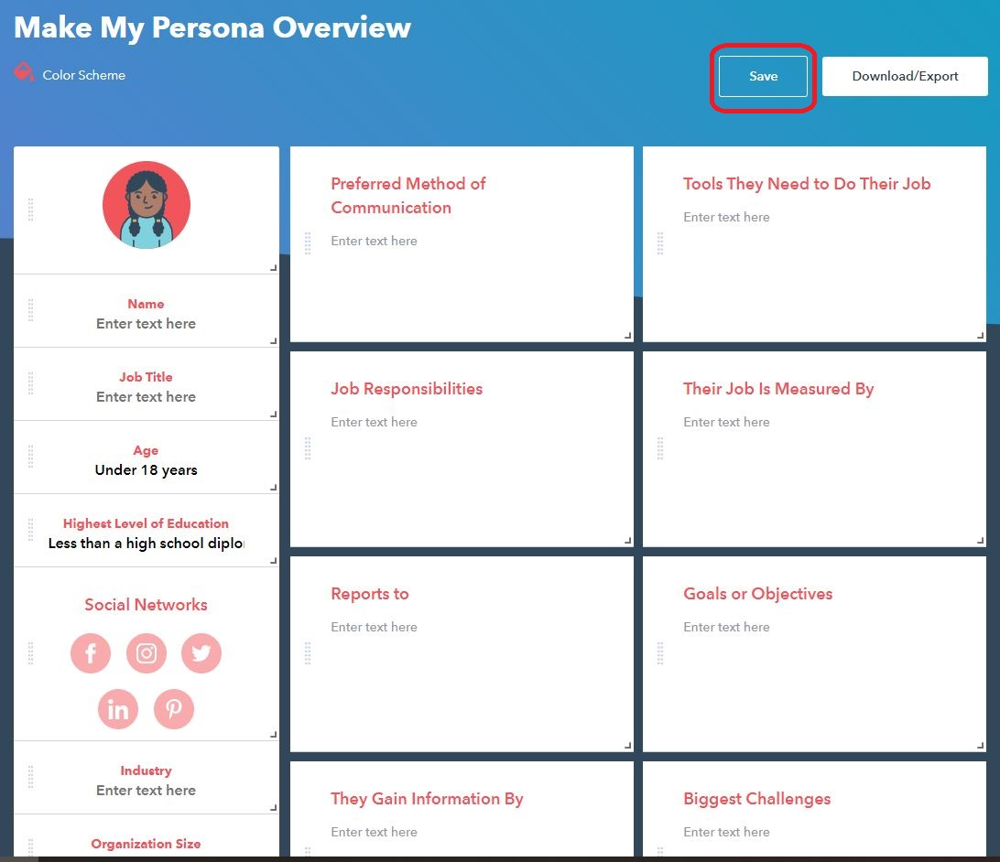
It will ask you to fill in some personal details.
After you have filled in your personal details, click the “Download Now” button. 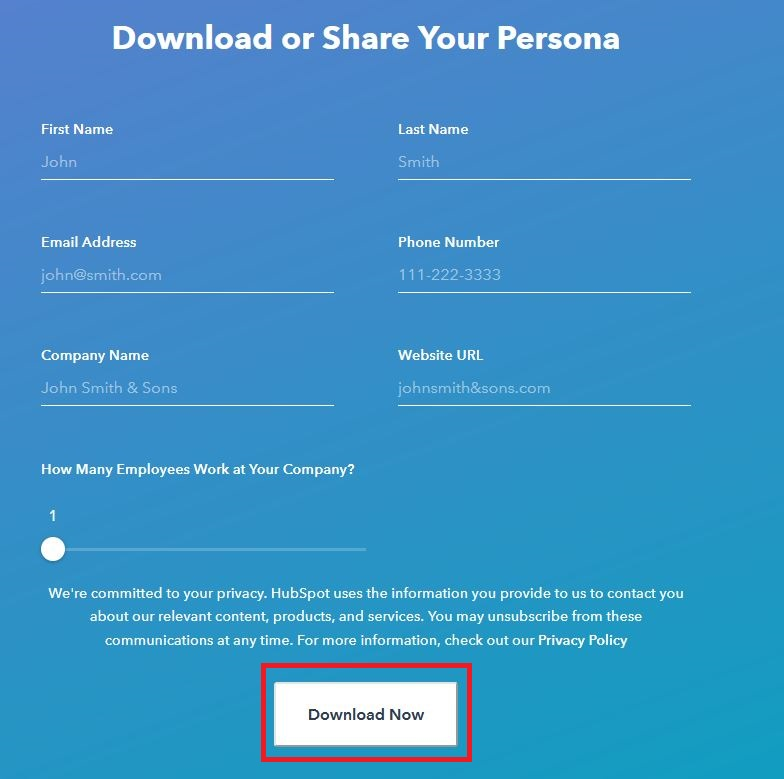
You can download your persona as a PDF. You will also be given a link that you can use to access it in the future, or share with your team members

Any Disadvantages?¶
For the persona photo, you can only use a pre-defined set of avatar (around 15 choices) - no real images options. You cannot copy and paste photos either.
Warning
If you search for Hubspot persona on Google, you might find this tutorial. This is VERY DIFFERENT to the Make My Persona tool. Please don’t use this one.
PersonaGenerator¶
This tool is pretty straight-forward. After you visit this link, you can start creating your persona by filling in content.
Save and Export¶
You get two links: one is view-only, one allows editing. You can share the two links in your team to edit/view your personas.
You can print the persona as a PDF.
Any disadvantages?¶
You cannot change the section title, add a new section or delete a section. In other words, the sections you can have on your persona are fixed. Please consider this before you choose this tool.
UXPRESSIA¶
To use this tool, create an account with UXPRESSIA for free. Visit this link.
Firstly, you need to sign up.
After you have signed up successfully, you will arrive at your personal workspace. Create a project.

In your project, you can create your persona. Click “ADD NEW”

Select “PERSONAS”. You can start with a blank one, then edit it yourself.

Uxpressia allows you to be very flexible with your sections - you can add/delete them, and there are different types of sections to choose from (e.g. text, sliders).

Any Disadvantages?¶
The following restrictions are limitations of a free plan:
You can only create one persona per project.
You can only create one project per account
You can only export it as a PNG.
To share your persona, you need to share your project first. The free plan only let you share your project with 1 person via email.
Tip
You could form small teams of 2 within the team to work on a persona. For review, the smaller teams can exchange their personas. You will need to create multiple accounts with UXPRESSIA.
Xtensio¶
Visit this link to start exploring.
Any Disadvantages?¶
The following restrictions are limitations of a free plan:
You cannot share the work with anyone.
You cannot download it as a PNG or PDF.
Your work expires after a couple of hours.

We do not recommend the free version of this tool due to the above limitations. If your team has explored other tools and decided that you want to use this one, check out their pricing.
Appendix D: Miro Tutorial¶
Miro is an online collaborative whiteboard platform that can be useful to you in SWEN90009. In this tutorial, we will first help you set up an account. Then, we discuss how Miro can be useful for some tasks in SWEN90009.
Set Up¶
Sign up for free on Miro website.
Once you have signed up, Miro will let you set up your team. (Note: If you use your university student email address to sign up, you might notice that there are some teams that you can join in your organisation already - but that’s not what we need. In this subject, you will need to create your own project team. )

Invite your team members.

Tips Before you Start¶
Number of Editable Boards¶
For a free account, your team only has 3 editable boards. Once you create more than 3 boards, only the 3 most recently created ones are editable.
How to make sure that you do not run out of boards? You can draw multiple diagrams on one board, and put each diagram inside a frame.
Template¶
Miro has a library of templates to help you get started with your task. There are two main ways to explore and add templates:
Option 1: On your Miro main page, you should see a list of templates suggestions. Click on a template to create a new board with the chosen template, or select “Show all templates” to explore more templates options. 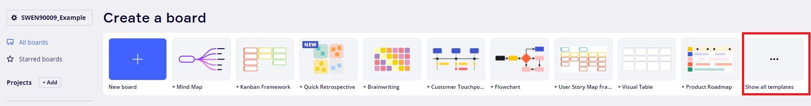
Option 2: Open a board you have already created, and add a new template in.

Frame¶
Frame can help you organise your board, especially if you run out of boards and decide to put multiple diagrams in one board. Also, if you want to export your board to a PDF, it is essential that you put content inside a frame (each frame will be a single page on the PDF).
How to add a frame:
On the tool bar, select the frame icon (marked in red).
Then, you can select the desired frame dimention. In this example, let us select “custom”.

Ajust the size of the frame so that your artefact is completely covered in the frame, as shown in the image below. You can give this frame a title, and change the background colour of your frame.

Use Miro¶
Miro allows you and your team to interact and collaborate on this platform. We strongly encourage you to use that to your advantage. Brainstorming and Sprint Retrospective meeting are two great examples that you can use Miro to have interactive team meetings.
Miro has a lot of templates at your disposal. In addition to brainstorming and retrospective meeting, check out the one for User Story Map.
Miro for Brainstorming¶
Let’s walk through an example. Let’s say you are designing an application that will help students decide which subject to take in the future.
Write down the question that needs to be solved on your board. You can add it as text.
Add the “Brainwriting” template to your board. Check out the Template section on how to add a template on a board.

You will find that the sticky notes are already created for you, ready to be filled in. Here are some tips for you:
You can use tag to help you organise your ideas into categories.
You can add reaction to ideas

You can also add comments on the ideas
Select the comment tool in the tool bar
Click on one of the sticky notes, and start adding comments

You don’t have to start with any template. Feel free to start with an empty board and create sticky notes as you run the brainstorm session.
Miro for Sprint Retrospective¶
Miro has lots of templates for Retrospective meeting. Search for “retrospective” in their template pool and select the one that suits your team the best. Retrospective Start/Stop/Continue is a template that we would recommend.


Export¶
There are two main ways to export your diagrams: export as an image or PDF.
Click the Export option at the top of your board.

Either export as an image or PDF. If you want to export it as a PDF, make sure you add a frame.

Extra Resources
There are so much more you can explore with Miro! For more tutorials and help, feel free to check out their website.
Appendix E: Marvel Tutorial¶
This tutorial shows you how you can use Marvel to help you create your paper prototype.
Before You Start Prototyping¶
Before you start prototyping, let us remind ourselves - why are we creating paper prototypes? What’s the purpose again?
The purpose of creating paper prototypes is to design the user interfaces of the system-to-be so that you can run usability test with end-users and clients to make sure it is fit for purpose. If you discover any problem during usability testing, you can go back and modify your design. By the end of the process, you have a validated prototype before you start coding. Improving design on your prototype is probably going to be much less expansive than on your code.
Now that you are clear on the purpose behind the task, we would like to provide some advice to help you:
No.1: Completeness of Scenarios¶
During your usability test, you will have tasks for your users/clients to perform. It’s really important to make sure that these scenarios in your paper prototype are complete. What does that mean? Let me give you an example.
Imagine that you have a scenario where a user needs to book a hotel room. On the interface, you have an option to confirm or cancel. You made sure that the “Confirm” button is clickable, and you prepared the transition to the next page. But the “Cancel” button is non-clickable. During the usability test, your client clicks “Cancel” and nothing happens.
The example above is an incomplete scenario. It’s better to have 4 - 5 complete scenarios than creating 100 pages but a lot of buttons are non-clickable. Remember - you want to run usability test and observe your users interacting with the system to improve your design. Half-completed scenarios won’t help you with that - it will even create confusions for users/clients. If you are designing a large system and there are a LOT of user stories to cover, we advise you to:
Ask yourself: what are the most important things that users must be able to accomplish on the application? What user stories MUST be tested?
Select 4 - 5 user stories or scenarios from your list, and start prototyping. Make sure they are complete.
No.2: Don’t Give the Answer Away¶
Let’s use our booking hotel room example again. Make sure you don’t give away clues or describe the steps to your users. Don’t say “First you would login, then you would click the Find Destination button, then you would browse all the hotels available, then…” the instructions that you give will prevent you from discovering design flaws. Instead, set up a little scenario for your users, provide them with context and observe how they complete the activity. For example, a better task would be:
You are planning a trip with your family to Sydney from 24th December - 2nd January. You want to book a hotel room. Visit our site and see what’s on offer.
No.3: Remember This Is a Low-Fidelity Prototype¶
Low-fidelity prototype shows only major navigation and content elements. You don’t need to include details such as the colour scheme, images, styling, or meaningful content.
Want Some More Resources?¶
Check out some tutorials and resources for running usability tests in the More Resources section.
Tips For Marvel¶
Here are some tips for using Marvel to create your prototype:
Make sure that you hide hotspot hints (instructions) when testing your prototype with end-users/clients. Remember, one of the goals of paper prototype is to test the usability of your design. If you don’t hide hotspot hints, end-users/clients will be given clues to know where to click.
Even with 4 - 5 scenarios, you might end up creating many of screens for your paper prototype. You can organise your screens into sections on Marvel. Checkout this series of short tutorials on sections.
Initial Set Up¶
Follow this link to create an Marvel account.
During your sign up process, Marvel might ask you to create your first Marvel Whiteboard. You can choose “Skip for now” to ignore this option, because what you will be needing is NOT a whiteboard.

If you want to invite your team members to your workspace, keep in mind that for a free account, you can have 6 people in TOTAL (including yourself!) to edit the workspace projects.
Using a free account, you only get ONE editable project. Keep that in mind before you create a second project.
Create Your First Project¶
After you have signed up, you can “Create project”.

There will be options to choose from - select the “Prototype” option.

Then, enter the project name.
Do you know if your client wants a web-application, or a mobile app? If it is a web-application, will the users mostly access this web-app via their phone, or laptop/computer? Select a device accordingly. In this tutorial, we will go with iPhone 12.

Create project.
Prototyping¶
Once you have created your project, you can start prototyping! There are two stages to create your paper prototype:
Design your screens - what are they going to look like?
Design the interactions and transitions between your screens.
Marvel offers three main ways to design your screens:
Create your own design on Marvel.
If you have got some design already, you can upload your design in Marvel.
Use the template that Marvel provides.

Prototyping - An Example¶
Let’s walk through an example. Let’s say you are designing an application for universities that will help university students decide which subjects to take in the future. Your clients have told you that they want the application to be a mobile app.
Reminder
Your paper prototype is an early draft of your design - it should be rapidly designed, simulated and tested with users. Please be careful with the level of details you put into it. It needs to show major navigation and major content elements. It does NOT need to show colours, images or meaningful contents.
Create your first project according to the create your first project section.
Let’s design the first page - Home page.
Click on “Start designing”

Firstly, our Home page can show some basic information about the user who has logged in. Let’s create a profile image icon. Select the icon options on the toolbar.

Let’s pick the 2nd one, and add it to our design.
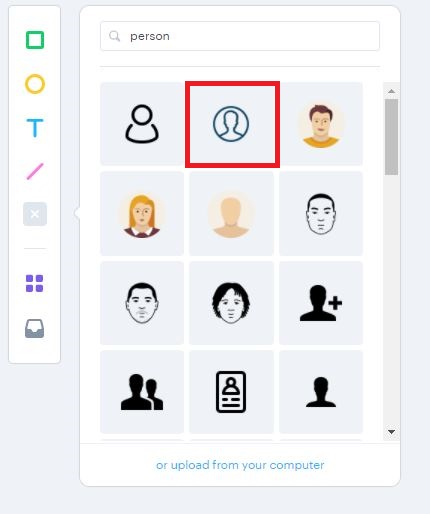Secondly, we can add some basic information about the user. Select the text option, and add text in our design.

For now, our page looks like:

Next, we decide that some subjects should be listed. They should be categorised into “Compulsory” (student must complete this subject as part of the course) and “Optional”. We can add some rectangles to represent subjects:

Our page looks like this now:

We are done with the design. Let’s close this page.

Let’s design the next page - a subject’s page.
Let’s create a new image.

According to our clients’ requirements, a subject’s page should have the subject’s name, a description, area of interests it relates to, advice from teaching staffs and past students, and a button to go back to the home page. The outcome might look like:

Let’s say we are done with our design our pages (for now). Let’s design the interactions between the two pages we created.
Hover your mouse over the Home page, click “Prototype” to add interactions.

Click and drag to draw a hotspot (hotspot is an interactive area to enable users move between screens)

Next, select the next screen you want to transition to.

Next, select the transition type.

Next, select the action that triggers the transition (i.e. is it a click, tap, or?)

Let’s say we are done with designing the interactions between screens. Select the “Play” button in the top right corner to watch the transition you just created.

To share paper prototype with your client so that you can run usability test with them, click “Share”, copy the link, and send it with them.

We hope that this simple example has helped you getting started with Marvel.
Appendix E: Figma Tutorial¶
This tutorial shows you how you can use Figma to help you create your digital prototype.
Before you Start Prototyping¶
You have completed your paper prototype and collected feedback from your clients. Now you can use the feedback you receive to create digital (high-fidelity) prototype that is much closer to what the final version of system-to-be would look like.
Similar to paper (low-fidelity) prototype, you will use your digital prototype to run usability tests with end-users/clients, collect more feedback, and refine your design. If you discover any problem during usability testing, you can go back and modify your design. By the end of the process, you have a validated prototype before you start coding.
With that in mind, we want to remind you of some important key points:
No.1: Digital Prototype Is High-Fidelity¶
Compared to low-fidelity prototype, high-fidelity prototype is much closer to the final version of your system-to-be. You need to be a lot more specific, introducing colour scheme, styling, images and meaningful, realistic content into it. There are not only major navigation elements, but also the more detailed ones in digital prototype. It is what the real product would look like - except there is no code.
No.2: Completeness of Scenarios¶
During your usability test, you will have tasks for your users/clients to perform. It’s really important to make sure that these scenarios in your digital prototype are complete. What does that mean? Let me give you an example.
Imagine that you have a scenario where a user needs to book a hotel room. On the interface, you have an option to confirm or cancel. You made sure that the “Confirm” button is clickable, and you prepared the transition to the next page. But the “Cancel” button is non-clickable. During the usability test, your client clicks “Cancel” and nothing happens.
The example above is an incomplete scenario. It’s better to have 4 - 5 complete scenarios than creating 100 pages but a lot of buttons are non-clickable. Remember - you want to run usability test and observe your users interacting with the system to improve your design. Half-completed scenarios won’t help you with that - it will even create confusions for users/clients. If you are designing a large system and there are a LOT of scenarios or user stories to cover, we advise you to:
Ask yourself: what are the most important things that users must be able to accomplish on the application? What user stories MUST be tested?
Select 4 - 5 user stories or scenarios from your list, and start prototyping. Make sure they are complete.
No.3: Don’t Give the Answer Away¶
Let’s use our booking hotel room example again. Make sure you don’t give away clues or describe the steps to your users. Don’t say “First you would log in, then you would click the Find Destination button, then you would browse all the hotels available, then…” the instructions that you give will prevent you from discovering design flaws. Instead, set up a little scenario for your users, provide them with context and observe how they complete the activity. For example, a better task would be:
You are planning a trip with your family to Sydney from 24th December - 2nd January. You want to book a hotel room. Visit our site and see what’s on offer.
Extra Resources
If you haven’t checked these resources out, we highly recommend you have a look:
This tutorial gives you more guidance and advice on how you should run your usability tests.
This article explains the number of users to run usability tests with.
Figma is free for students. Check out this website to verify your education status.